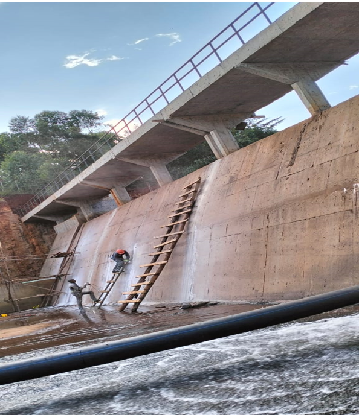

JOOP Services & Engineering Works was contracted by Soledge Enterprise to carry out professional waterproofing of critical construction joints at the Kiandege Dam site in Gatundu. This project, initiated in October 2024, is aimed at enhancing the structural integrity and water retention performance of the dam infrastructure.
